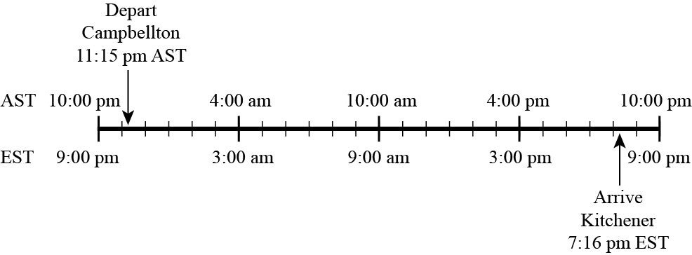

Problem
Fuad takes the train to visit his family. He travels from Campbellton, NB to Kitchener, ON.
The train leaves from Campbellton at 11:15 p.m. Atlantic Standard Time (AST) and arrives in Kitchener at 7:16 p.m. Eastern Standard Time (EST) the next day. Atlantic Time is one hour ahead of Eastern Time. For example, at 1:00 p.m. EST it is the same time as 2:00 p.m. AST.
How long will his trip take? Justify your answer.The table below gives the stops on the trip, in order, and the distances between stops.
Stop Distance to next
stop (in km)Campbellton, NB \(105\) Amqui, QC \(208\) Rivi‘ere-du-Loup, QC \(334\) Drummondville, QC \(109\) Montreal, QC \(151\) Cornwall, ON \(269\) Belleville, ON \(131\) Oshawa, ON \(59\) Toronto, ON \(43\) Brampton, ON \(77\) Kitchener, ON Which station is approximately halfway between Campbellton and Kitchener?

Solution
We can use a timeline to determine the length of the trip. We show the AST time above the line and the matching EST time below the line.

From this, we can see that the travel time is between 11:15 p.m. and 8:16 p.m. AST. Counting along the timeline, we can see that \(20\) hours elapse between 12:00 a.m. to 8:00 p.m. AST the next day. From the departure time of 11:15 p.m. until 12:00 a.m., \(45\) minutes elapse. Since the arrival time is \(16\) minutes after 8:00 p.m. AST, then the travel time is an additional \(45 + 16 = 61\) minutes. We know that \(61\) minutes is equal to \(1\) hour and \(1\) minute, so the total travel time is \(21\) hours and \(1\) minute.
One way to find the midpoint of the trip is to add up the distances starting at each endpoint. The following chart keeps track of these distances. As we keep track, we want to keep the total distances from each endpoint close to each other.
Stop Distance from
Campbellton (km)Amqui \(105\) Rivi‘ere-du-Loup \(105 + 208 = 313\) Drummondville \(313 + 334 = 647\) Montreal \(647 + 109 = 756\) Stop Distance from
Kitchener (km)Brampton \(77\) Toronto \(77 + 43 = 120\) Oshawa \(120 + 59 = 179\) Belleville \(179 + 131 = 310\) Cornwall \(310 + 269 = 579\) Montreal \(579 + 151 = 730\) The distance travelled from Kitchener to Montreal is only 26 km less than the distance travelled from Campbellton to Montreal. Since the distance from Montreal to Drummondville is 109 km, which is more than double 26 km, the halfway point is closer to Montreal than Drummondville.
Alternatively, we could calculate the total distance from Campbellton to Montreal: \[105 + 208 + 334 + 109 + 151 + 269 + 131 + 59 + 43 + 77 = 1486 \text{ km}\]
Half the distance is \(1486 \div 2 = 743\) km. From the tables above, we can see that the distance from Campbellton to Montreal is closer to \(743\) km than the distance from Campbellton to Drummondville, and we see that the distance from Kitchener to Montreal is slightly less than \(743\) km. Thus, Montreal is approximately halfway between Campbellton and Kitchener.
Teacher's Notes
Standard time zones were introduced in North America during the late 19th century. This was in response to a growing problem of coordinating train schedules between cities. Until 1884 there were hundreds of different time zones across the continent and around the world, since each city could decide its own standard time.
As travel over long distances became more common and took less time, it was increasingly important to create an international standard. In 1876 Sir Sandford Fleming, a Scottish-Canadian engineer, proposed that the world be divided into 24 time zones, of 15 degrees longitude and one hour each. He also recommended that Greenwich, England be used as the anchor point for universal time zones. His suggestions are the basis of today’s globally accepted time zones and UTC (Coordinated Universal Time).
The UTC offset describes the difference in hours and minutes from Greenwich Mean Time to identify time zones around the world. For example if it is noon at the prime meridian (0 degrees longitude, which passes through Greenwich, England), then it is 4:00 p.m. in a time zone identified as UTC+4:00 and it is 1:00 a.m. in a time zone identified as UTC-11:00.
Most time zones in the world are offset by full hours from UTC\(\pm\)00:00. However there are some time zones offset by half hours or even quarter hour differences. For example:
Newfoundland, Canada is UTC-3:30 when it observes standard time and
UTC-2:30 when it observes daylight savings time.Sri Lanka has a time zone of UTC+5:30.
The time zone of Nepal is UTC+5:45.
Sources: timeanddate.com and wikipedia.org